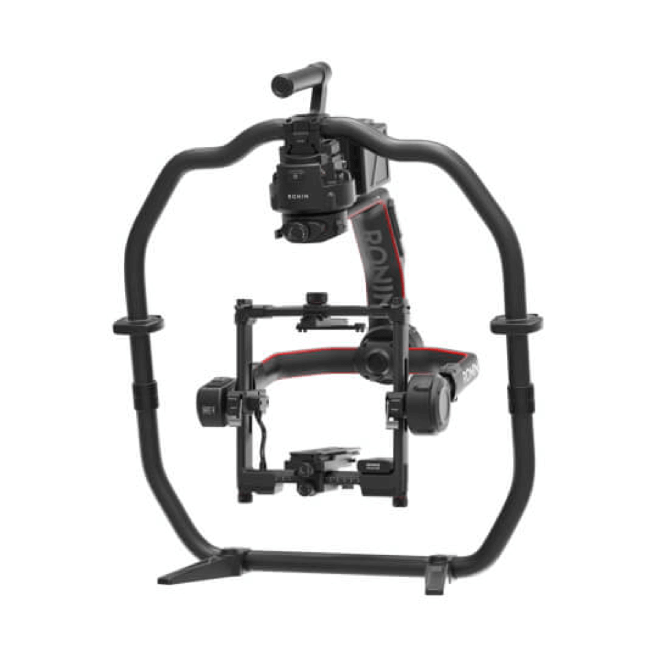

GIMBAL · 01
DJI Ronin 2 PRO Pack
Gimbal para configuraciones de cámara de mayor peso, pensado para estabilización profesional en rodajes de cine y publicidad.
- Carga publicadaHasta 14 kg
- ModeloDJI Ronin 2
- PackPRO Pack
- AplicaciónEstabilización de cámara